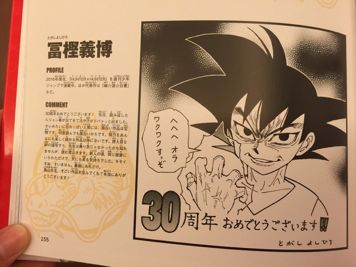
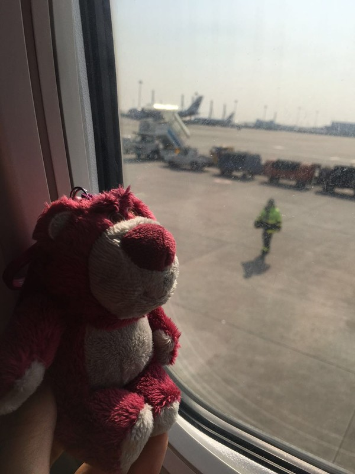

逃离现实~回归自我之“猴年春节躲避战”——日本北九州~~别府、熊本、佐贺、福冈
虽说每次旅行都会打开蚂蜂窝借鉴大量的旅游攻略和众亲们的游记，每次旅游归来之后都信誓旦旦地说也要把自己的行程分享出来，可每次回来之后都会被琐事拖住所有的精力，时间长了，又怕自己写的游记会不太完整，最终每次都作罢。但是！但是！不能让“懒癌”继续消磨自己的热情，无论如何，一定要先整出一篇肯定不那么完美的游记，向猴年的开始致敬~2016，请对我好一点~~~ 千万不能步上富坚义博的后尘~（FJ，快给我把猎人画完！！！）
先说那么一些小废话，旅游真的是很值得珍惜的财富，学生时期，大把的假期，可是没自给自足的经济来源，又没放心的出游伙伴~工作了，存了钱，有了伴，但5天的带薪年假让每次旅游的选择都好似人生重大决定似的困难。年假拼着长假出行，看的是人山人海，住的是高价酒店，即使如此，还是不断地向往外跑。虽对家人有愧，但连续两年的春节，我和先生都选择了外逃，逃离一些些对现实的不乐观，逃离一些些来自家人”甜蜜“的负担，丢了自己扮演的种种角色，在陌生的地方做最真的自己。 原本选择欧洲作为目的地，但我先生在”人身安全“的问题上非常固执，最终，还是回归我们结婚两年已去了三次的日本~考虑到春节国人的出游狂潮，决定了以不太那么热门的九州作为本次出逃的目的地。事实证明，选择还是比较正确的。
本次行程从2月6日出发~到2月14日回归。走了别府、熊本、嬉野、福冈。护照啊、机票啊、行前准备啥的一概不谈，因为蚂蜂窝上太多详细的记载了，只要借鉴前辈们的优秀经验就行啦，还是以日程为条线，图文为向导，强调共鸣吧。2月6日，飞福冈，再搭JR去别府~~酒店：杉乃井
经过一系列的准备，带着迫切想要离开的心，和先生两人搭上”飞的“，向日本九州靠近~旅行就是这样，离开有离开的不舍~但到回归时，依然也有回归的不舍。心和脚步，总有一个在路上，希望多晒晒九州的阳光。
由于飞机晚点，所以原本所计划的行程全数delay，到达福冈机场，有两种办法去博多站，一种是先搭乘shuttle bus去国内航站楼，再搭地铁去博多；第二种，是福冈空港国际线直接去博多站，从国际线机场出去，在2号巴士站台等车。上车买票即可。实在不高兴拖着行李满地跑，所以我们选了后者。坐巴士的多数都是日本人，巴士上有专门放行李的区域，我们之前一直去日本，所以每人都保留了一张西瓜卡，事实证明，这是无比英明的抉择，上车刷一下，下车刷一下，整理券忘记拿也无所谓。西瓜卡已经基本在全日本普及，有时还能在餐馆、便利店、自动贩卖机上使用，非常方便。